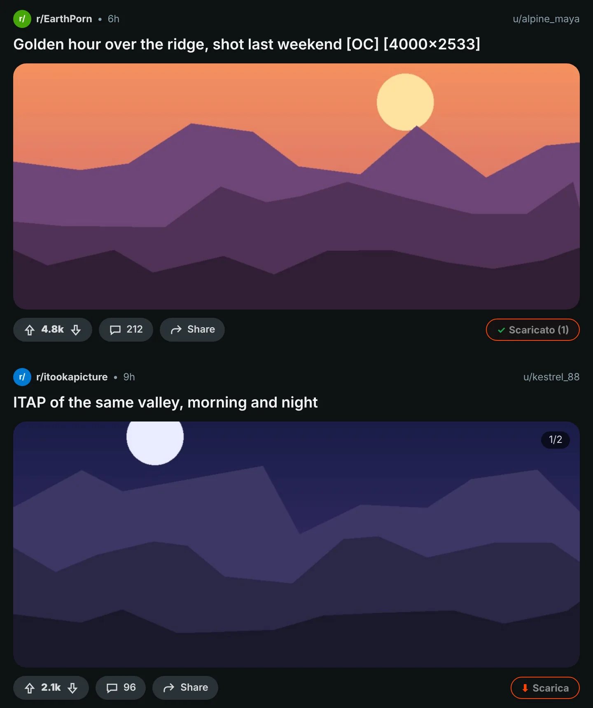
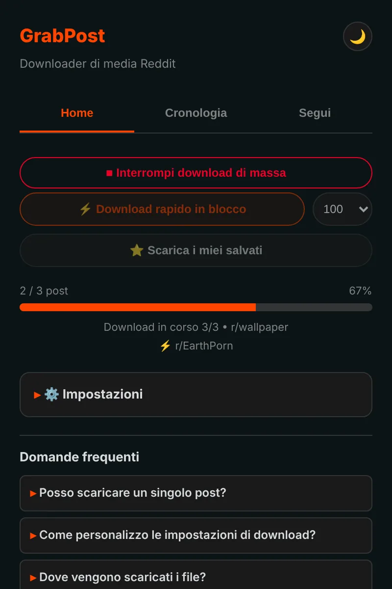
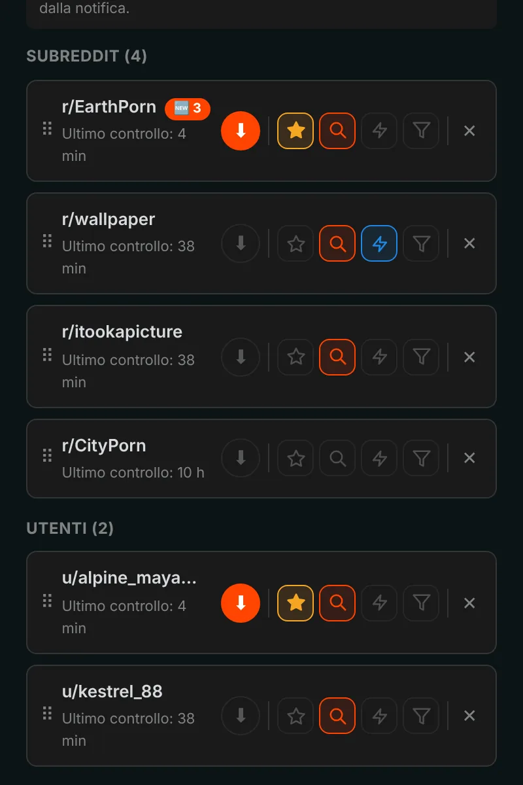
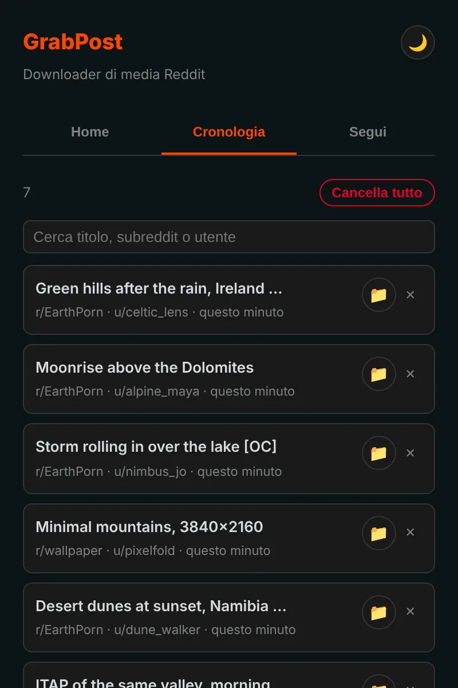

Salva qualsiasi cosa da Reddit con un clic.
GrabPost aggiunge un pulsante Scarica a ogni post di Reddit. I video mantengono l'audio, le gallerie arrivano complete e interi subreddit o profili si scaricano mentre fai altro. Gratis e senza tracciamento.
Non è ancora negli store. L'installazione da GitHub richiede circa un minuto.

Premi il pulsante sul post.
Un pulsante su ogni post
Il pulsante arancione sta nella riga di voto e condivisione di ogni post: nel feed, nei profili e nei risultati di ricerca, sul Reddit nuovo e su quello vecchio. Funzionano immagini, gallerie, GIF, Redgifs e link Imgur. Alt+Maiusc+D scarica il post al centro dello schermo.

Pagine intere in un colpo
La modalità rapida legge un subreddit, un profilo, un multireddit o una ricerca direttamente dai dati di Reddit, quindi non serve scorrere. Salta ciò che hai già e si ferma quando arriva ai post scaricati in precedenza. Anche i post salvati si scaricano così.

Segui, e i nuovi post arrivano da te
Segui subreddit e utenti e ricevi una notifica quando compaiono nuovi contenuti, oppure lascia che si scarichino da soli. Filtra per tipo di contenuto, NSFW o parole chiave. Fino a 10 preferiti possono essere controllati anche ogni 5 minuti.

Ogni download viene ricordato
La cronologia elenca ciò che hai salvato, con una casella di ricerca, e i post che hai già sono segnati su Reddit. I backup si creano da soli, quindi reinstallare non cancella la tua lista.

I dettagli sono curati
Video con audio
Reddit tiene l'audio in un file separato. GrabPost lo trova e lo unisce, direttamente nel browser.
Le tue cartelle, i tuoi nomi di file
Modelli come {subreddit}/{user} per le cartelle e {date}_{title} per i file.
Niente doppioni
Riconosce la stessa immagine anche se qualcuno l'ha ricaricata in un altro subreddit.
Funziona accanto a IDM
I download manager non possono prendersi il file e buttare via i nomi delle cartelle.
Paziente con Reddit
Quando Reddit chiede una pausa, GrabPost aspetta esattamente quanto richiesto e poi riprende.
15 lingue
L'estensione e questa pagina parlano la tua lingua.
Quello che scarichi riguarda solo te
- Nessuna analisi, nessun tracciamento, nessun account
- Comunica solo con Reddit e con i siti che ospitano i suoi contenuti
- Cronologia e impostazioni restano nel tuo browser
- Open source su GitHub
Installalo in un minuto
GrabPost non è ancora nel Chrome Web Store, quindi si installa a mano. Funziona in Chrome, Edge, Brave, Opera e negli altri browser Chromium.
- Scarica l'ultimo grabpost-v…zip da GitHub ed estrailo in una cartella che terrai.
- Apri
chrome://extensionse attiva la Modalità sviluppatore in alto a destra. - Fai clic su Carica estensione non pacchettizzata e scegli la cartella grabpost estratta.
- Apri Reddit. Il pulsante arancione compare sui post e l'icona nella barra apre il pannello di GrabPost.
Per aggiornare, sostituisci i file nella stessa cartella e premi il pulsante di ricarica sulla scheda di GrabPost. Impostazioni e cronologia restano.
Firefox: la versione per lo store dei componenti aggiuntivi è in arrivo. Nel frattempo lo zip per Firefox si può caricare temporaneamente da about:debugging.
Domande
GrabPost è gratis?
Sì, tutte le funzioni sono gratuite. Se ti fa risparmiare tempo, puoi offrire un caffè allo sviluppatore.
Dove vanno i file?
Nella cartella dei download del browser, in una sottocartella che scegli tu. Per impostazione predefinita è Reddit Downloads e i nomi dei file iniziano con il nome del subreddit.
Devo aver fatto l'accesso a Reddit?
Solo per i post salvati e per le community con limite di età. Tutto il resto funziona senza account.
Se reinstallo perdo la cronologia?
No. Con la sincronizzazione del browser attiva, impostazioni e lista dei seguiti tornano da sole. Viene anche salvato un file di backup automatico, e GrabPost può ricostruire la cronologia dall'elenco dei download del browser.
Funziona in Edge, Brave o Opera?
Sì. Qualsiasi browser Chromium che possa caricare un'estensione non pacchettizzata funziona con lo zip per Chrome.
Scarica GrabPost
Non è ancora negli store. L'installazione da GitHub richiede circa un minuto.